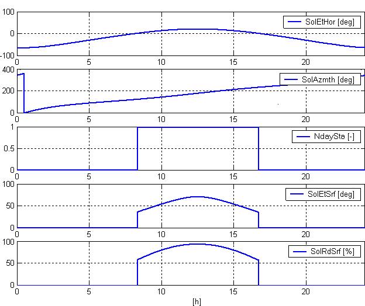

SOL_POS: Calculation of solar position
Block SOL_POS (FB443) calculates the current solar position (solar elevation angle and solar azimuth angle). In addition, the current solar elevation angle and relative intensity of direct solar radiation is calculated relative to a given surface. A preset date/time and time factor can be preset for commissioning to test certain functions in an abbreviated manner.
Application
- Position and angle for blinds are controlled in relation of the solar position (anti-glare). This helps prevent direct solar radiation into a building while admitting as much light as possible into the building.
- Day/night switching in dependence of sunrise/sunset (protection against intrusion blinds, lighting control).
Functionality
Calculate solar position
The block calculates the solar position as per DIN 5034-2 from the following values:
- Local time and date as per system time and current settings for time zone (UTC Offset) and daylight saving time.
- Geographical longitude (Eastern longitude) [Lngit] and latitude (Northern latitude) [Latit].

The calculated solar position is indicated by the following angles:
- [SolAzmth] = Solar azimuth angle (angle of sun to North).
- [SolEtHor] = Solar elevation angle (angle of sun to horizontal horizon).
Calculate solar elevation angle (relative to given surface).
The blocks calculates the solar elevation angle relative to a given surface.
- Given surface: Orientation [AspSrf], tilt [TltSrf].

The calculated solar elevation angle [SolEtSrf] (angle of sun to given surface) is issued.
Calculate solar radiation (relative to given surface).
The block calculates the solar radiation on a given surface to a surface oriented vertically to the sun (= maximum solar radiation). Influences such as blur or diffusion are not considered.
Given surface: Orientation [AspSrf], tilt [TltSrf].
The calculated solar radiation [SolRdSrf] on the given surface is issued in % to maximum solar radiation (100%).
Sunrise, sunset, day/night
The calculated sunrise time [Sunrise] and sunset time [Sunset] is issued.
Day is when solar elevation angle [SolEtHor] > 0°.
Day (sunrise to sunset) or night is issued.
Inputs
Pin | E | Description | |||||||
No pin. |
| The system time is evaluated for date and time. | |||||||
No pin. |
| UTC Offset and daylight saving time/standard time is evaluated as time zone. UTC Offset is defined in the BACnet device object. UTC Offset is important for proper functioning of SOL_POS! | |||||||
Local Time Zone | UTC offset (UTC – Local Time) | Time at 12:00 UTC | |||||||
AST - Atlantic Standard EDT - Eastern Daylight | +240 minutes | 8 am | |||||||
EST - Eastern Standard | +300 minutes | 7 am | |||||||
CST - Central Standard | +360 minutes | 6 am | |||||||
MST - Mountain Standard | +420 minutes | 5 am | |||||||
PST - Pacific Standard | +480 minutes | 4 am | |||||||
ALA - Alaskan Standard | +540 minutes | 3 am | |||||||
CET - Central European MET - Middle European MEWT - Middle European Winter | -60 minutes | 1 pm | |||||||
EET - Eastern European | -120 minutes | 2 pm | |||||||
WAST - West Australian Standard | -420 minutes | 7 pm | |||||||
CCT - China Coast, USSR Zone 7 | -480 minutes | 8 pm | |||||||
JST - Japan Standard, USSR Zone 8 | -540 minutes | 9 pm | |||||||
EAST - East Australian Standard GST | -600 minutes | 10 pm | |||||||
NZST - New Zealand Standard NZT - New Zealand | -720 minutes | Midnight | |||||||
Latit | pa | Northern latitude. | |||||||
47.17 | Default value for Zug. | ||||||||
... | Local value. | ||||||||
Lngit | pa | Eastern longitude. | |||||||
8.52 | Default value for Zug. | ||||||||
... | Local value. | ||||||||
AspSrf | pa | Aspect angle tilted surf. Angle of a tilted surface relative to North. | |||||||
0° | North. | E.g. [AspSrf] = 0° and [TltSrf] = 90°: This specifies a vertical surface oriented North. | |||||||
90° | East. |
| |||||||
180° | South. | E.g. [AspSrf] = 180° and [TltSrf] = 90°: This specifies a vertical surface oriented South. | |||||||
270° | West. |
| |||||||
... | ... | E.g. [AspSrf] = 180° and [TltSrf] = 0°: This specifies a horizontal surface oriented North. Top/zenith--- | |||||||
TltSrf | pa | Tilt angle tilted surf. Tilt of a tilted surface relative to the horizon. | |||||||
0.0 | Horizontal surface. | ||||||||
90.0 | Vertical surface. | ||||||||
-90.0 to 90.0. | Surface oriented up. | ||||||||
EnSim | pa | Release simulation Simulation is enabled via [EnSim]. The date and time can be preset via [SimDaTi] to accelerate the curve using the time factor [TiFacSim].
For [TiFacSim] = 0 means time stands still, i.e. a preset is used from [SimDaTi]. [TiFacSim] = 1 means real time, for [TiFacSim] > 1 time is faster than real time. The setting [TiFacSim] = 1440 simulates a day in one minute. | Commissioning notes:
| ||||||
SimDaTi | pa | Simulated date and time. | |||||||
TiFacSim | pa | Time conversion factor for the simulation. | |||||||
UtcOfs | pa | UTC offset | Default value | Value range | |||||
Outputs
Pin | E | Description | |
SolAzmth | a | Solar azimuth angle. Angle of sun relative to North. | |
SolEtHor | a | Solar elevation.angle f.horizon. Angle of the sun to horizontal horizon. | |
SolEtSrf | a | Sol.elev.angle tilted surf. Angle of the sun relative to tilted surface [AspSrf], [TltSrf]. | |
SolRdSrf | a | Sol.rad.on tilted surf. Solar radiation in % on tilted surface [AspSrf], [TltSrf]. | |
100 | 100% direct solar radiation. | ||
0 | No direct solar radiation. | ||
NdaySta | a | Night day state. |
|
0 (Night) | Night. | ||
1 (Day) Default | Day between sunrise [Sunrise] and sunset [Sunset]. | ||
Sunrise | a | Sunrise. Local time at sunrise. | |
Sunset | a | Sunset. Local time at sunset. | |
DsavSta | a | DST status Daylight saving time status. Shows the status for the changeover between daylight saving time and standard time. | |
0 (No) Default | Standard time (default value). | ||
1 (Yes) | Daylight savings time. | ||
ErrCode | a | Error code Integer (default value: 20) Error. XFB error codes | |
Input values
Pin | Description | Data type. | Default value | E.g. Engineering unit or Text group | Min. | Max. |
Latit | Northern latitude. | Real | 47.17 | degAngl | -90.0 | 90.0 |
Lngit | Eastern longitude. | Real | 8.52 | degAngl | -180.0 | 180.0 |
AspSrf | Aspect angle tilted surf. | Real | 180.0 | degAngl | -360.0 | 360.0 |
TltSrf | Tilt angle tilted surf. | Real | 90.0 | degAngl | -180.0 | 180.0 |
EnSim | Release simulation | Boolean | 0 (No) | No, Yes |
|
|
SimDaTi | Simulated date and time. | DateTime |
|
|
|
|
TiFacSim | Time conversion factor simulation. | Real | 0 |
| 0 | 10000 |
UtcOfs | UTC offset | Integer | -60 | min | -1440 | 1440 |
Output values
Pin | Description | Data type. | Default value | E.g. Engineering unit or Text group | Min. | Max. |
SolAzmth | Solar azimuth angle. | Real | 0.0 | degAngl | 0.0 | 360.0 |
SolEtHor | Solar elevation.angle f.horizon. | Real | 0.0 | degAngl | -90.0 | 90.0 |
SolEtSrf | Sol.elev.angle tilted surf. | Real | 0.0 | degAngl | -90.0 | 90.0 |
SolRdSrf | Sol.rad.on tilted surf. | Real | 0.0 | % | 0.0 | 100.0 |
NdaySta | Night day state. | Boolean | 1 (Day) | Night, day |
|
|
Sunrise | Sunrise | Time | T#0D_0H_0M_0S_0MSS |
|
|
|
Sunset | Sunset | Time | T#0D_0H_0M_0S_0MS |
|
|
|
DsavSta | DST status | Boolean | 0 (No) | No, Yes |
|
|
ErrCode | Error code | Integer | 20 |
| 0 | 33 |
Example
Example:
Zug: Longitude = 8.52°, latitude = 47.17°.
Date: 1.1.2005
Time zone: TimeZone = +1 ; UTC Offset: -60 min.
Orientation to tilted surface relative to South: [AspSrf] = 180°.
Angle of tilted surface: [TltSrf] = 90° (vertical).
Diagrams:
[SolEtHor] = Solar elevation angle for horizon.
[SolAzmth] = Solar azimuth angle.
[NdaySta] = Night day state.
[SolElSrf] = Solar elevation angle to tilted surface.
[SolElSrf] = Solar radiation in % on tilted surface.

Calculated sunrise: 8:18 am.
Calculated sunset: 16:41 h
Process response
Standard (see General rules and information).
Troubleshooting
Standard (see General rules and information).